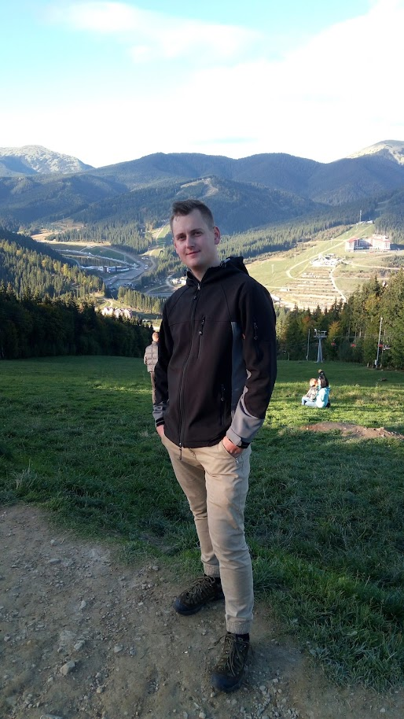

Дата народження: 16.01.1992
Очікуваний рівень з/п: за результатом співбесіди
2009 – 2014рр. – Полтавський національний технічний університет ім. Ю.Кондратюка
Електромеханічний факультет, «Автомобілі та автомобільне господарство»
диплом магістра, кваліфікація: інженер з організації експлуатації та ремонту автомобілів
2011- 2013рр. – Харківський національний університет Повітряних Сил ім.. І. Кожедуба
2014-2016 рр.– Полтавський національний технічний університет ім. Ю.Кондратюка
Факультет менеджменту та бізнесу, «Бізнес-адміністрування»
Диплом магістра, кваліфікація «Магістр із бізнес-адміністрування»